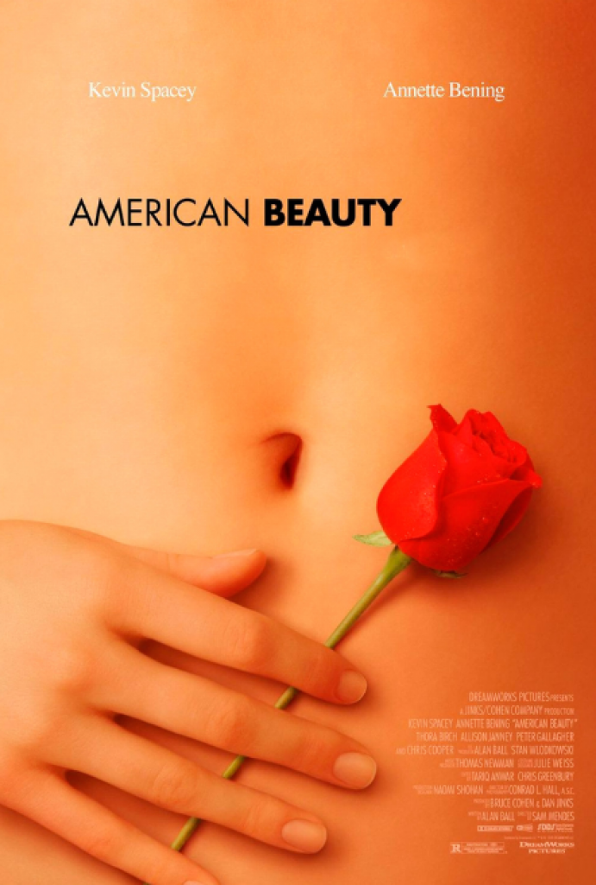

Başrollerinde Kevin Spacey, Annette Bening ve Thora Birch gibi oyuncuların yer aldığı 1999 ABD yapımı ‘Amerikan Güzeli’, orijinal adıyla 'American Beauty', 2000 yılındaki Oscar Ödülleri’nde ödülleri silip süpürmüştü. Oscar’a 8 dalda aday olan kült film, “En İyi Film” de dahil olmak üzere, 5 dalda Oscar kazanmıştı. Yönetmenliğini Sam Mendes’in üstlendiği Amerikan Güzeli’nin konusu ise tam bir Amerikan Rüyası taşlaması. Orta sınıf bir ailenin yaşadığı bunalımları konu alan bu gerçekçi film, dışarıdan mükemmel görünen yaşamların yakından bakıldığında nasıl da yapay ve travmatik olabileceğini izleyicinin yüzüne vuruyor. Asla öğrenmeyen bir adamı konu alan ünlü roman Lolita’ya da birçok göndermede bulunan Amerikan Güzeli, kırmızı-beyaz fonlu bir sinema klasiği.
 film listesi